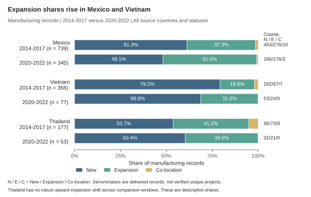
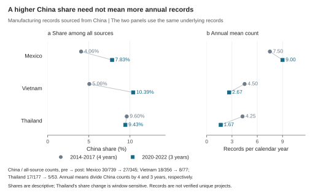
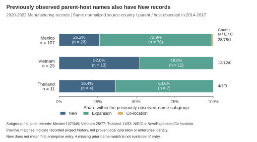

fDi Markets：现有数据的使用与 facts
现有 fDi Markets 数据的使用方法与三条补充 facts
数据审核批次：2026-10-02；说明完成于 2026-10-03。研究对象：墨西哥、越南、泰国作为目的地的跨国制造活动项目记录。本文使用当前交付的 Excel 计算，尚未把供应商后续补充视为已完成。
这份数据现在可以用来描述项目的调整方式、来源构成以及母公司历史记录，最适合作为 F03/F04 的项目层补充。 已生成三条 facts：墨西哥和越南扩建记录份额上升；两国中国来源份额上升，但数量变化不同；基期已观察到的母公司—东道国组合中，后期仍包含新建项目。第三条对解释 F04 的 continuing links 最有价值。
这些结果服务于 JIE Gate 2 的机制证据，并限定 Gate 3 的解释。它们尚不能识别 MP 弹性，也不能量化 trade-network flexibility 与 multinational-production flexibility 分别或共同提供多少 fragmentation insurance。
先按以下规则使用现有文件
| 项目 | 本次实际采用的规则 | 用途与理由 |
|---|---|---|
| 国家及方向 | Destination_Country 为 Mexico、Vietnam、Thailand；保留所有来源国 | 研究进入三个东道国的生产项目，不能只筛中国来源后再计算来源构成 |
| 活动 | Activity = Manufacturing；保留全部原生 Sector | 直接对应生产活动；不将销售、总部、物流、研发等混入制造活动主样本 |
| 主样本 | 2014—2022 年，共 2,349 条记录 | 墨西哥 1,428；越南 608；泰国 313。年度表保留 2018—2019 年 |
| 主比较 | 2014—2017 年与 2020—2022 年 | 数量分别除以 4 年、3 年；份额为各期合计记录数的比例，并非逐年份额的简单平均 |
| 2023 年使用 | 只在敏感性中使用 1—9 月；比较的每一年都限制在相同 9 个月 | 同时取 2014—2017 与 2020—2023 各年 1—9 月；不乘以 4/3，不当作全年 |
| 暂不进入主 facts | 2023 年第四季度和 2024 年 | 第四季度存在覆盖与字段问题；2024 年缺 Project_Type、Parent_Company 等关键字段 |
| 类型和状态 | 保留 New、Expansion、Co-Location 和全部状态 | 不把 Opened 筛选或只保留非估计记录误当为质量改进；状态不等于各年持续在营 |
| 统计单位 | 项目记录，主结果保留原始行 | 没有 Project_ID，暂不能把每行确认成唯一项目、工厂或企业 |
| 主要权重 | 记录数 | 金额和就业包含大量估计；单位尚待供应商确认，不用作实际投资、产出或生产率的替代指标 |
2023 年 10—11 月来源国的异常截断使其覆盖完整性存疑；12 月又缺失项目类型和母公司等字段。2024 年只有 8 列，虽可机械统计来源和活动，却无法做与前三条 facts 一致的类型与历史匹配分析。待补充后，再扩展时间窗口；不要在当前图表中补零或外推这些缺失信息。2014—2022 年的关键字段足够完成本次计算，但这不等于已经独立证明供应商交付覆盖了数据库全部历史项目。
来源分组沿用 F03 的可比定义：中国仅为 Source_Country = China；Other East Asia 为 Japan、South Korea、Taiwan；美国单列；其余归 Other parents，其中包括 Hong Kong 和 Singapore。当前不把香港合入中国，也不凭空构造 Unallocated ROW。该分组按交付字段计算，正式口径仍需供应商数据字典确认。
FDI01：墨西哥、越南扩建份额上升，但扩建年均记录数下降
| 目的地 | 总记录数：基期 / 后期 | Expansion 份额：基期 → 后期 | 份额变化（百分点） | Expansion 年均记录数：基期 → 后期 |
|---|---|---|---|---|
| 墨西哥 | 739 / 345 | 37.35% → 51.01% | +13.67 | 69.00 → 58.67 |
| 越南 | 356 / 77 | 18.82% → 31.17% | +12.35 | 16.75 → 8.00 |
| 泰国 | 177 / 53 | 41.24% → 39.62% | -1.62 | 18.25 → 7.00 |
可采用的 fact 表述：在当前制造活动项目记录中，与 2014—2017 年相比，2020—2022 年墨西哥和越南的 Expansion 份额分别增加 13.67 和 12.35 个百分点；该方向在全部预设窗口与记录处理检查中保持。 泰国的变化对窗口敏感，不应写成三国共同发生的结构变化。
份额上升不能写成“扩建投资增长”。墨西哥 Expansion 年均记录由 69.00 降至 58.67，越南由 16.75 降至 8.00；两国 New 年均记录分别由 113.25 降至 55.33、由 70.50 降至 17.67，下降更快。该 fact 描述的是交付样本内项目类型构成变化，尚不能证明实际生产能力增长或实际 FDI 下降。



主结果表 · 全部时间窗口和记录处理方案 · 年度来源与类型明细
FDI02：中国来源份额在墨西哥、越南均上升，但数量含义不同
| 目的地 | China / 全部来源：基期 → 后期 | 中国来源份额 | 中国来源年均记录数 |
|---|---|---|---|
| 墨西哥 | 30/739 → 27/345 | 4.06% → 7.83% | 7.50 → 9.00 |
| 越南 | 18/356 → 8/77 | 5.06% → 10.39% | 4.50 → 2.67 |
| 泰国 | 17/177 → 5/53 | 9.60% → 9.43% | 4.25 → 1.67 |
可采用的 fact 表述：中国来源在墨西哥和越南制造活动记录中的份额分别由 4.06% 升至 7.83%、由 5.06% 升至 10.39%，两个国家的份额增加方向在全部预设检查中保持；中国来源记录数量的变化却存在国家差异。 墨西哥的中国来源年均记录数增加，越南主窗口内减少。
越南的中国来源份额上升，与全部来源记录的分母下降更快有关。加入 2023 年的同月比较后，中国来源每年 1—9 月平均记录数由 4.00 增至 7.00，方向不同于主窗口。因此可写“来源构成转变”，不能把现有结果统一写成“中国对三国投资增加”，也不能把这份额当成中国来源的产出份额或资本份额。泰国中国来源份额方向同样随窗口变化。
全部四个来源组的数量和贡献已保留；贡献分母统一使用基期全部来源的年均记录数：100 ×（后期某来源年均记录数 − 基期同来源年均记录数）/ 基期全部来源年均记录数。各来源贡献精确加总为总记录数变化率；这与“来源份额变化”是不同指标。



全部来源主结果 · 来源 × 项目类型贡献 · 全部来源敏感性
FDI03：基期已观察到的母公司组合中，后期仍有新建项目
以来源国、规范化后的 Parent_Company 名称、东道国进行精确匹配。仅统一 Unicode、空白和大小写，不做模糊企业合并。先查该组合是否在 2014—2017 年的 Manufacturing 记录出现，再查看其 2020—2022 年的项目类型。
| 目的地 | 基期匹配组的后期记录数 | 其中 New | New 比例 | 再要求同一原生 Sector：New / 匹配记录 |
|---|---|---|---|---|
| 墨西哥 | 107 | 28 | 26.17% | 21 / 96（21.88%） |
| 越南 | 25 | 13 | 52.00% | 9 / 20（45.00%） |
| 泰国 | 11 | 4 | 36.36% | 3 / 9（33.33%） |
可采用的 fact 表述：在基期已观察到的母公司—东道国组合中，墨西哥后期 107 条记录中有 28 条 New，越南 25 条中有 13 条 New。进一步要求同一原生行业，New 仍分别占 21/96 和 9/20。已有母公司组合内部的调整可以包含新建项目，不能全部归为扩建。 泰国主窗口也有正例，但匹配样本仅 11 条，替代窗口可为零，不据此提出稳健的三国共同结论。
这是对 F04 最直接的解释补充：国家—行业联系持续存在，并不意味着其中所有调整都来自旧厂扩张。不过，New 是项目类型，不等于企业首次进入；正向名称匹配证明的是已有项目记录，不证明当时已投产、仍在营或唯一法律实体。即使加上同一原生行业，仍未完成与 AMNE 行业的跨库对应。
基期未匹配组也不能称为“新进入企业”。其后期仍有 Expansion：墨西哥 98 条、越南 12 条、泰国 14 条。未匹配可能来自 2014 年以前的投资、名称变化、其他活动类别或观察遗漏。本文只利用正向历史匹配的证据，不把未匹配数量解释为进入率。



母公司历史匹配主结果 · New 正向匹配记录及原表行号 · 同一原生行业的全部敏感性
结果对窗口和疑似重复记录是否敏感
计算了四个时间窗口与三种记录处理方式，共 12 个方案：主窗口；等长的 2015—2017 对 2020—2022；剔除后期 2020 年的 2014—2017 对 2021—2022；两期都仅取 1—9 月的 2014—2017 对 2020—2023。三种记录处理是保留全部记录、折叠非联系字段完全相同记录，以及保留项目类型和母公司后按较少字段合并的压力检查。最后一种可能合并真实的异地项目，不是已经清洗出的唯一项目数，也不是统计上下界。
| 目的地 | Expansion 份额变化范围（百分点） | China 份额变化范围（百分点） | 解释 |
|---|---|---|---|
| 墨西哥 | +13.43 至 +14.17 | +2.09 至 +6.21 | 两项方向均保持为正 |
| 越南 | +10.85 至 +23.25 | +2.89 至 +16.62 | 两项方向均保持为正 |
| 泰国 | -12.75 至 +1.36 | -3.07 至 +12.73 | 两项方向均可能翻转 |
这些范围是设定变化产生的结果范围，不是置信区间。相同来源—母公司—东道国的 New 正例在墨西哥和越南保持，泰国不保持。全部方案中总年均记录数仍下降，但历史覆盖尚未独立核实，因此不把这一现象直接解释成东道国实际 FDI 收缩。
| 目的地 | 固定共同原生行业权重后的 Expansion 份额：基期 → 后期 | 共同支持样本：基期 / 后期 |
|---|---|---|
| 墨西哥 | 39.15% → 48.32% | 401 / 217 |
| 越南 | 21.13% → 32.81% | 245 / 60 |
| 泰国 | 42.36% → 41.78% | 131 / 44 |
上述补充检查限制在三个国家、两期均有记录的 13 个原生 Sector，并固定使用三国合计的基期行业记录权重。墨西哥和越南扩建份额的上升方向仍在，说明在这一受限样本中，变化不完全由所保留行业之间的权重变化驱动。该计算不是因果控制，也不是 AMNE 六部门结果，不能据此排除全样本的一切行业构成影响。
如何放回当前项目
| 用途 | 建议 | 与现有事实的关系 |
|---|---|---|
| 机制证据 | 推荐：将 FDI01—FDI03 作为单独补充包 | FDI02 补充 F03 的来源构成；FDI01 和 FDI03 约束对 F04 持续联系的解释 |
| 论文动机 | 可使用带样本限定的描述句，优先 FDI03 | 说明 aggregate continuing links 内部仍可能有新建项目，避免将国家—行业 intensive margin 直接等同企业或工厂 intensive margin |
| 金额加权/资本存量/产出增长 | 暂不推荐 | 金额单位、估计属性、投产与退出信息不足；项目公告记录不等同实际产出 |
| 首次企业进入率/在营企业数量 | 目前不可识别 | 没有完整历史实体与运营状态；New 标签和基期未匹配都不能直接识别首次进入 |
| 贸易战因果效应/MP 弹性/福利保险 | 目前不能据此估计 | 没有识别设计、实际经营结果与结构参数映射；不能据 New 占比直接设置 hgamma 或自动加入 endogenous entry |
原有 F03/F04 的正式比较窗口是 2014—2017 与 2020—2023，并使用六个映射后的 AMNE 制造业部门；本次主窗口的后期止于 2022 年，活动口径也是全部 fDi Manufacturing。原有六部门实际上为 autos、electrical_equipment、electronics、machinery、textiles_apparel、other_manufacturing，medical_devices 没有单列进入正式六部门。缺少 Sub-sector/NAICS 等细项时，不能声称当前 fDi 已与其严格匹配。因此，不能把“AMNE 产出增长”和“fDi 记录下降”写成同一对象的矛盾或据此计算项目生产率。
建议保留当前三条作为独立的描述性事实版本。补齐数据后，先重跑相同规则，再扩至 2023—2024 全年与可比行业；只有新增信息足以约束关键 MP margin 并改变经济结论时，再讨论模型扩展。本次未改写原有 facts。
资料、复核与复现
原始文件：data/raw/fDi_Markets .xlsx。本次输出：output/fdi_facts_2026_10_02/。逐条派生表保留 Excel 行号、原始项目类型和母公司名称，方便追溯；不导出个人联系人字段。
独立审核从原始工作簿另写算法重算，四个窗口 × 三种记录处理 × 三个国家共 36 个单元的 4,860 个主结果数值一致；来源和类型加总、年均分母、零值年份处理均通过。同原生行业匹配与固定行业权重的追加 139 个数值也全部一致。三张图的数值、文字和导出已检查；图形同时提供 PNG、SVG 和 PDF。原 Excel 及受保护的既有 F03/F04 结果 SHA256 未改变。
这里的“通过”指计算与图文一致，并不等于已证明供应商数据完整、项目唯一、真实投产或因果识别成立。
完整派生记录与审核标识 · 方法和样本规则 · 原始 Excel 审核资料 · 图形审核
复现顺序：运行 code/analysis/fdi_facts/build_fdi_facts.py 计算；运行 validate_fdi_facts.py 独立验证，再用其 --extensions-only 参数核对追加行业检查；用已安装 matplotlib 的 Python 运行 plot_fdi_facts.py 生成图形；检查图形后运行 write_fdi_report.py 打包说明。计算与独立验证使用已配置的 bundled Python；绘图使用 C:/Python314/python.exe。任何原始数据或表格发生变化，都需要重新完成数值和图形审核，不应沿用旧审核状态。